安裝 Ubuntu Desktop¶
In this tutorial, we’ll download and install Ubuntu Desktop 26.04 LTS on your laptop or PC.
If you’ve never installed an operating system, don’t worry: Ubuntu makes the process very easy. You’ll encounter a guided installer that will ask you a couple of questions. Whenever you’re not sure what to pick, you can just select the default option, which ensures that you end up with a fully usable Ubuntu installation. No deep technical knowledge is required.
What you’ll need:
A laptop or PC with at least 25GB of storage space.
A flash drive, 8GB or above recommended.
Will Ubuntu work on my computer?¶
While Ubuntu works on a wide range of devices, it’s best to use a device listed on the Ubuntu certified hardware page. These devices have been tested and confirmed to work well with Ubuntu.
If you can’t see your device there, you can always just 試用 Ubuntu Desktop and check if everything works as expected.
If you want to run Ubuntu on Apple Silicon hardware, such as recent Macs using M1 CPUs or later, refer instead to the Ubuntu Asahi community project, which isn’t supported by Canonical. The hardware support might be limited and depends on your specific machine. For example, Ubuntu Asahi 25.10 only runs on systems with M1 and M2 CPUs.
You can also install Ubuntu in a virtual machine on top of your current system using Multipass.
For guidance on installing Ubuntu on platforms based on architectures other than x86 (including ARM or RISC-V boards, such as Raspberry Pi), see Ubuntu hardware support documentation.
備份您的資料¶
If you’re installing Ubuntu on a PC or laptop that you’ve used previously, back up your data before you start the installation:
Move any files that you want to keep to another storage device, such as an external disk or a USB drive.
To back up your web browser, connect your browser to an online account, such as a Firefox account or a Google account. After the Ubuntu installation, your browser synchronizes your data when you log into your account. Note that the Safari browser doesn’t work on Ubuntu.
Back up your files from the USB flash drive. The drive will be erased.
Download an Ubuntu image¶
Get the Ubuntu installation image from the Download Ubuntu Desktop page. Save it to a memorable location on your PC. The downloaded file is called ubuntu-26.04-desktop-amd64.iso or similar.

Create a bootable USB stick¶
Write the downloaded Ubuntu image to a USB stick to create the installation media. This is not the same as copying the downloaded image file: you have to use special software.
警告
This will erase your USB stick. Back up your files first.
The application that we’ll use depends on the system that you’re currently using.
Open the Disks application. You can find it in the applications menu or by searching for 「Disks」.
Insert your USB stick. It appears in the sidebar. Select it there.
警告
Make sure to select the USB stick and not the disk with your running system. Both are listed.
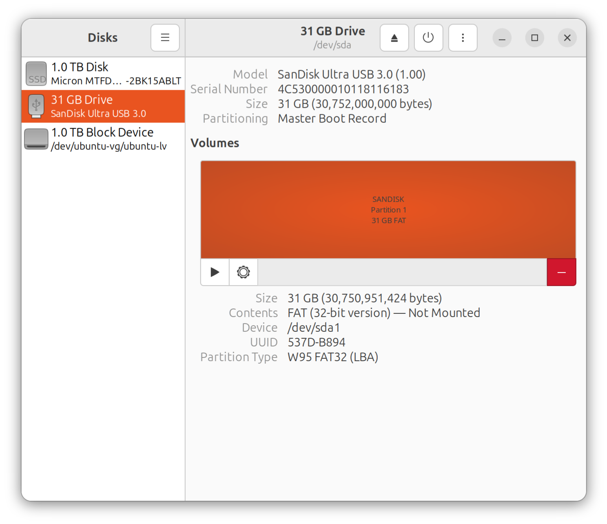
Close all applications that access files or folders on the USB stick, including the file browser.
In the Disks window header, click Drive Options (⋮) and select Restore Disk Image…

Next to Image to Restore, select the downloaded Ubuntu image file.
Click Start Restoring… and confirm. The application asks for your password.

A progress bar appears while Disks is writing the image.
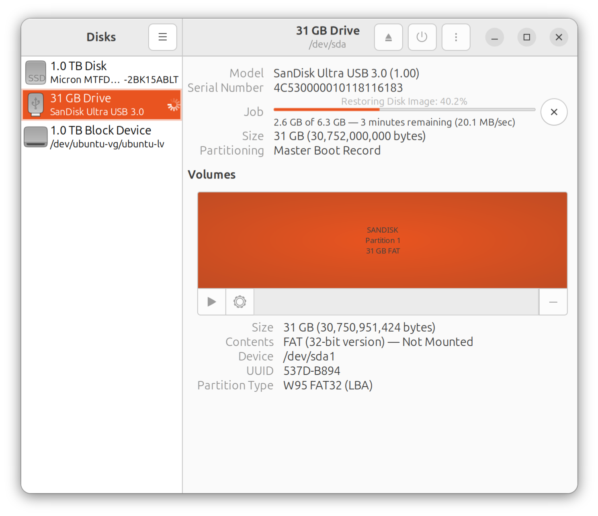
When the progress bar finishes, click Eject this disk (⏏).
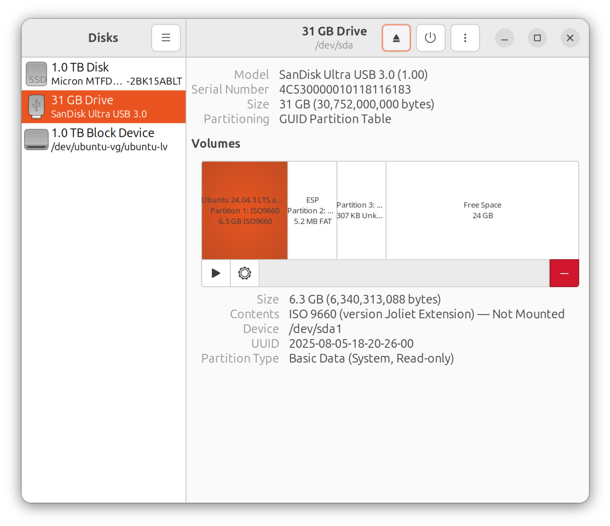
Download and install the latest version of Rufus from the rufus.ie website.
If you’re using Windows 7, install version 3.22 of Rufus. On Windows XP or Vista, install version 2.18.
Launch Rufus. If prompted, allow online updates.
備註
Rufus presents many options in its interface. It’s safe to leave most of them with their default values.
Insert your USB stick. It appears in the Device field.
If Device shows the wrong USB device, select the correct one from the drop-down menu.

Click SELECT next to Boot selection. Choose the Ubuntu image file that you’ve downloaded and confirm by clicking Open.
If the button reads DOWNLOAD instead, click the dropdown and change it to SELECT first.

If you’ve already tried Rufus and the USB stick failed to boot on your system, change Partitioning scheme to GPT and check that Target system is set to UEFI (non CSM). This works on modern systems that disable legacy compatibility.
Click START to write the image to USB.
Rufus tells you that the Ubuntu image is an ISOHybrid image. This means that the same image file can be used as the source for both a USB stick and a DVD.
Confirm the Write in ISO Image mode option.

If Rufus asks to download additional files to complete writing the image, select Yes to continue.
Rufus warns you that all data on the USB device is about to be destroyed. Double-check that you’ve selected the correct device and confirm by clicking OK.
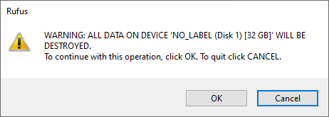
Rufus is now writing the image to USB. This usually takes around 10 minutes.

When Rufus has finished writing to the USB device, the Status bar says READY.
Click CLOSE to complete the write process.

Insert the USB stick.
At the balenaEtcher website, download Etcher for macOS (arm64) if you’re using an Apple Silicon machine, or download Etcher for macOS if you’re using an Intel Mac.

Install and open balenaEtcher.
Click Flash from file and select the downloaded Ubuntu image.
By default, the image file will be in your Downloads folder.
Click Select target and choose your USB stick.

Click Flash! to write the image to USB.
See the exhaustive how-to guide for other platforms and alternative image writers.
Now you have a USB stick that works as Ubuntu installation media.
Boot from the USB flash drive¶
Insert the USB stick into the laptop or PC where you want to install Ubuntu.
Restart the computer.
Your device should recognize the installation media and launch the Ubuntu installer.
If Ubuntu doesn’t launch, restart your computer again. This time, hold a key during startup:
On a PC or Windows computer, F12 is the most common key for bringing up the system boot menu but Escape, F2 and F10 are common alternatives. If unsure, look for a brief message when your system starts: this often informs you which key to press to access the boot menu. You can also find the right key in the documentation for your laptop or PC.
In the boot menu that appears, select your USB device.
To start Ubuntu on Apple hardware, restart or power-on the Mac with the USB stick inserted while you hold the Option or Alt (⌥) key.
This launches the Startup Manager, which shows bootable devices connected to the machine. Your USB stick should appear as gold or yellow and be labeled EFI Boot. Select it to proceed to the standard Ubuntu boot menu.
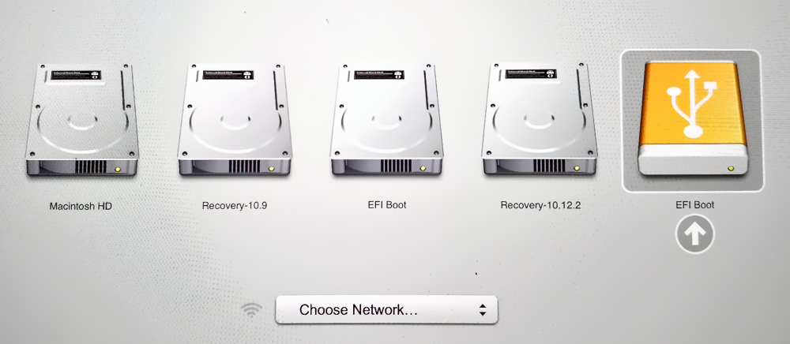
Follow the installer¶
The Ubuntu Desktop installer opens.
Choose your language.

Select any accessibility settings that your require.

Select your keyboard layout.
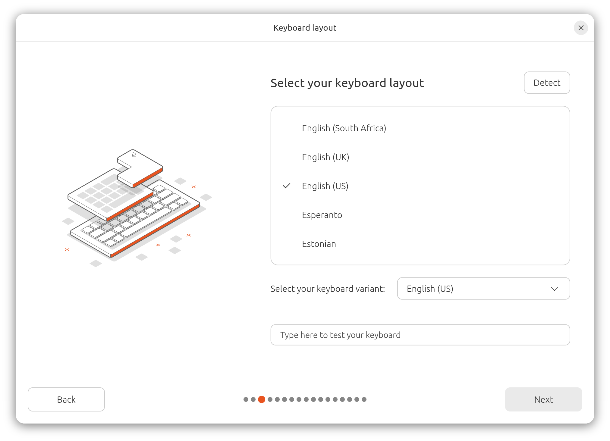
連接您的網路。
This allows Ubuntu to download updates and third party drivers, such as NVIDIA graphics drivers, during installation.

The network connection is optional. If you can’t connect, the Ubuntu installation will still work.
The installer gives you the choice to try or install Ubuntu.
If you click Try Ubuntu, you can preview Ubuntu without making any changes to your PC. You can use the preview to test if your hardware works correctly with Ubuntu. You can then return to the installer menu at any time by clicking the Install Ubuntu shortcut on the desktop.

To proceed, click Install Ubuntu.
警告
Some PCs use Intel RST (Rapid Storage Technology), which is not supported by Ubuntu. If this is the case, you won’t be able to proceed with the installation unless you disable RST on your machine.
If you encounter this alert, see Reconfigure Windows to use AHCI to resolve the issue. To learn more, see Intel RST during Ubuntu installation.
Type of installation¶
Here, you can select how you want to be guided through the installation and what software you want to install.
Choose between an interactive and automated installation.
The interactive option is the standard route for most users.
With the automated installation options, advanced users can define their installation beforehand to standardize multiple systems and add further customization. These options require you to load a configuration file from another USB stick, from a web server or from the Landscape administration tool. An example tutorial for an automated installation is available at Getting started with Autoinstall on Ubuntu Desktop 24.04 LTS.
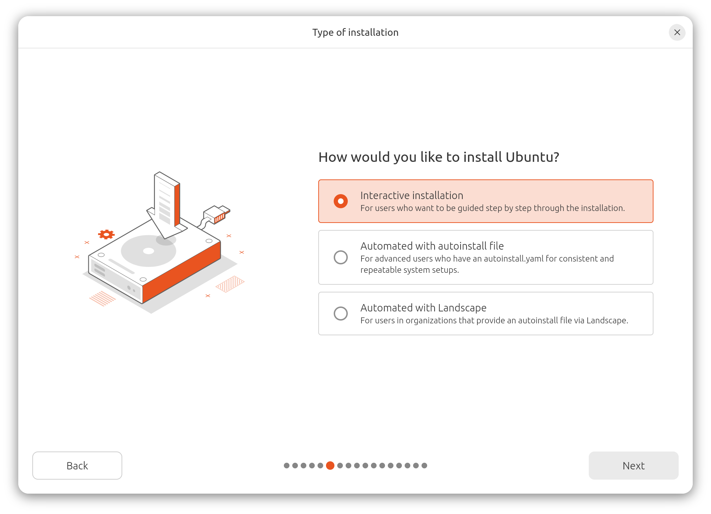
In this tutorial, we’ll follow the interactive installation.
Choose between the Default selection and Extended selection options.
The default installation comes with the basic essentials to get started, which you can then expand on after install using the App Center. The extended selection contains additional office tools and utilities.
You can always install all these applications later if you have an internet connection.
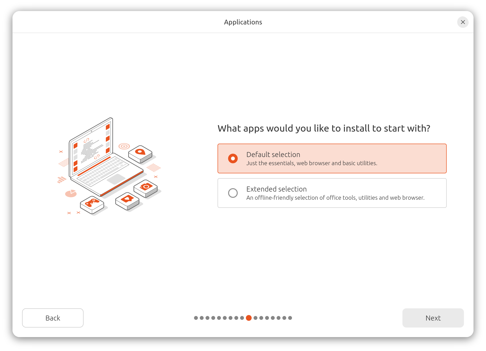
Here, you can install third-party software. It can improve device support and performance (for example, NVIDIA graphics drivers) and adds support for additional media formats.
We recommend that you enable both options.
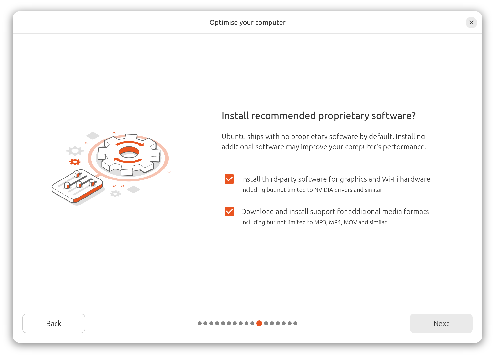
磁碟設定¶
Select how Ubuntu should be installed on the disk:
If you’d like Ubuntu to be the only operating system on your hard drive, select Erase disk and install Ubuntu. This is the easiest option.
Manual installation is intended for expert users.
If your device currently has another operating system installed, you also have the options to install Ubuntu alongside that system.
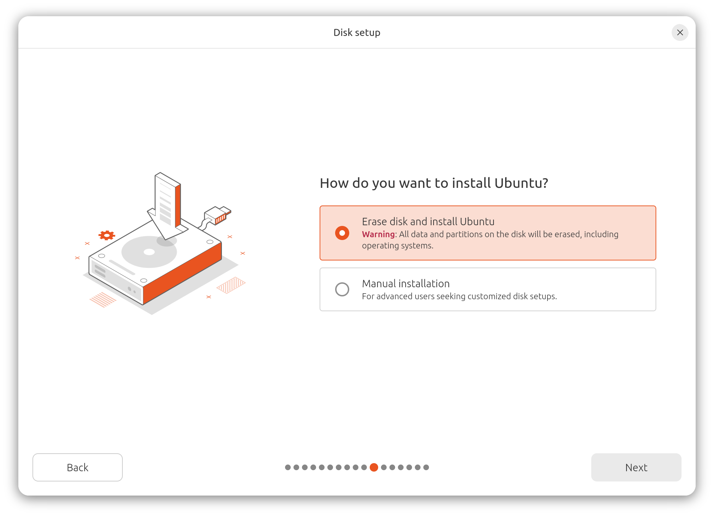
Let’s take a moment to review all of the above options in detail.
抹除磁碟並安裝 Ubuntu¶
If you select this option, Ubuntu takes up the entire disk space on the selected drive.
If your PC has multiple hard drives, you can select where Ubuntu is installed. This option allows you to install Ubuntu alongside an existing OS as long as they each have their own drive.
警告
Ensure that you’re selecting the right drive in this case.
Encrypt your data¶
If you want to encrypt your data, you can enable disk encryption after you select the Erase disk and install Ubuntu option:
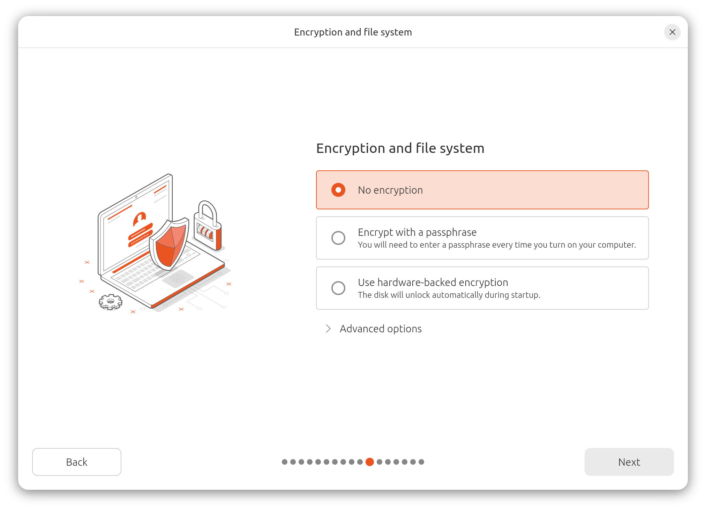
Select a disk encryption method:
Encrypt with a passphrase is the recommended encryption option.
Use hardware-backed encryption is a more convenient encryption method that only works on recent PCs.
Other encryption options are available when you click Advanced options.
Depending on which encryption you’ve selected, the installer might ask you to create a passphrase that you’ll need to enter during every system startup to unlock the disk.
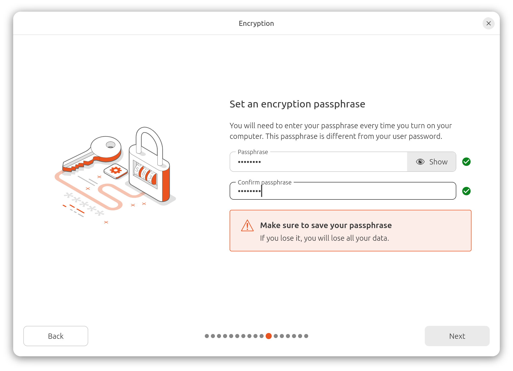
警告
Keep your passphrase safe and don’t lose it. Write it down and store it in a safe place outside of your local system. You won’t be able to recover your data without the password.
Manual partitioning¶
Manual partitioning is designed for advanced users who want to create a specific configuration for their use case. If that’s you, we assume that you know what you’re doing and that you’re comfortable with the installer interface.
Here, you can see all existing drives and partitions. You can create and manage new partition tables and configurations.
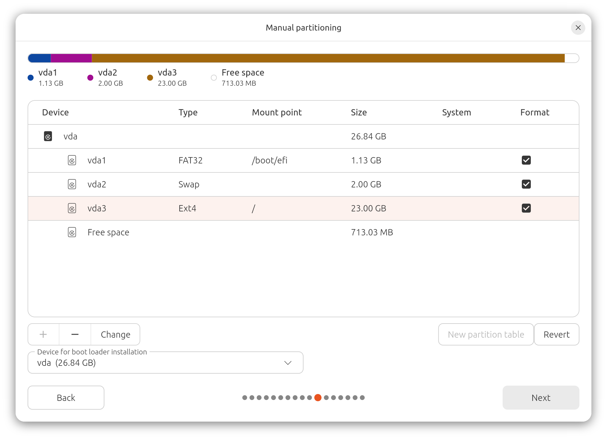
If the interface doesn’t make sense, we recommend that you pick one of the automated disk setup options instead.
Installing Ubuntu alongside another operating system¶
If you select this option, you’ll be able to select the drive where you want to install Ubuntu and the amount of disk space that you’d like Ubuntu to use. The available space is limited by the size that the files on the disk occupy. Ubuntu will preserve all existing files.
This view automatically selects the largest partition on the drive. For more control, you can switch to the Manual partitioning option.
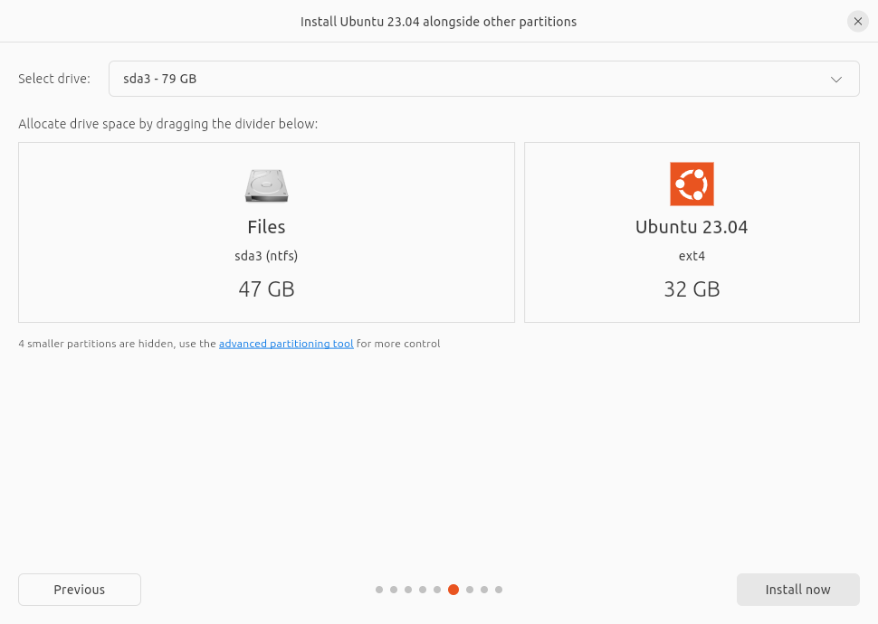
Alert: Windows BitLocker is enabled¶
If your device has Windows BitLocker Drive Encryption enabled, the installer can’t access the encrypted Windows installation. Because of that, it can’t install Ubuntu safely alongside Windows.
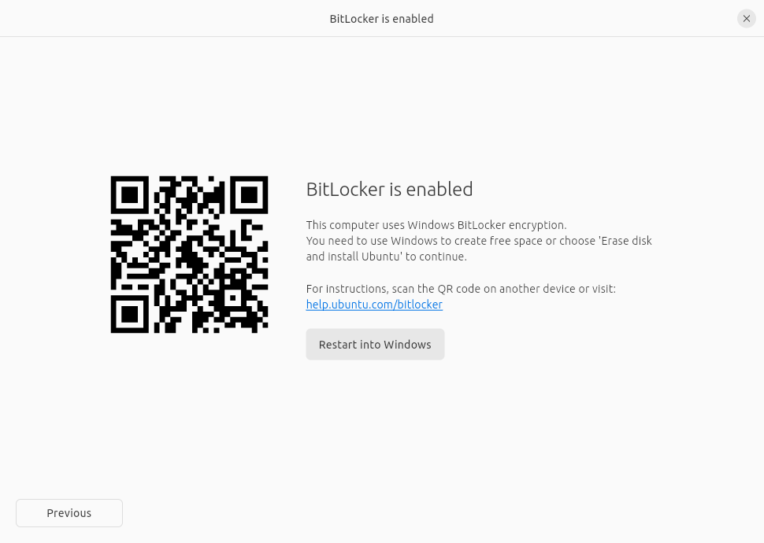
You can either erase Windows and replace it with Ubuntu, or you can disable BitLocker and install Ubuntu alongside Windows. To disable BitLocker, see Turn off BitLocker in Windows. To learn more, see BitLocker during Ubuntu installation.
Alternatively, you can install Ubuntu to a separate, unencrypted disk if it’s available on the system.
使用者與密碼¶
On this screen, enter your name and pick a name for your computer as it will appear on the network. Enter your user name and a strong password.
You can choose to log in automatically or require a password. If you use your device while traveling, it’s recommended to keep Require my password to log in enabled.
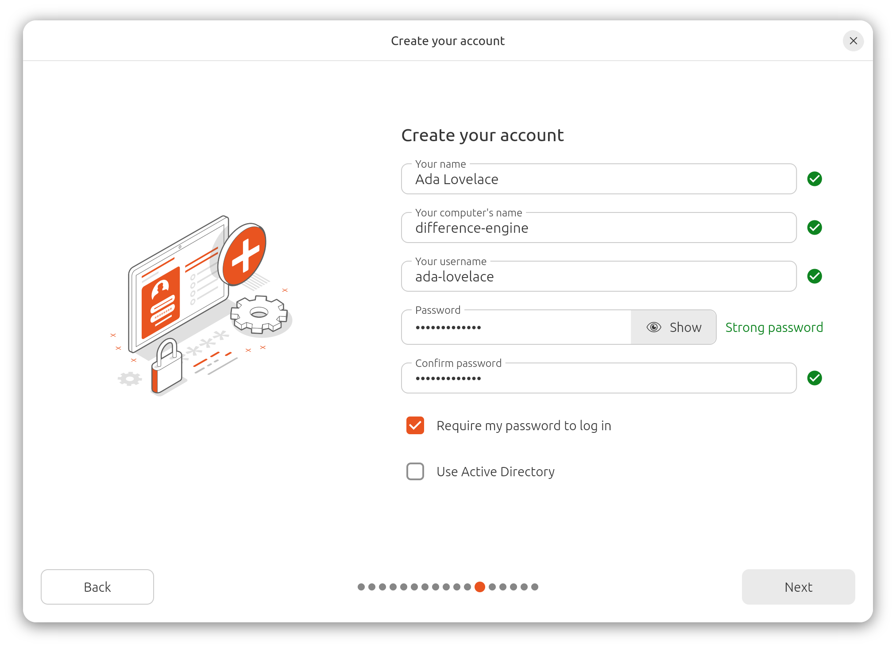
選取您的時區¶
Select your location and timezone from the map screen. Ubuntu can detect your location automatically if you’re connected to the internet.
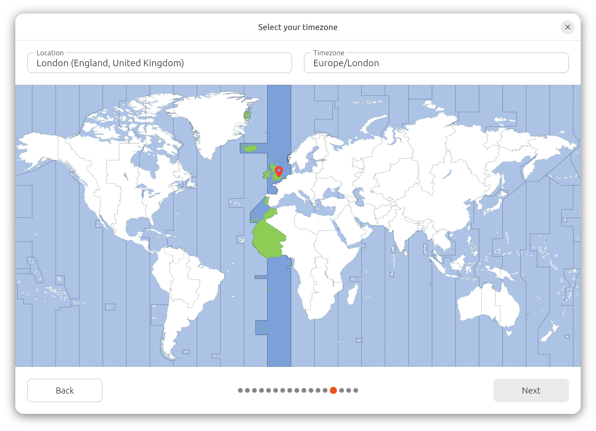
Ready to install¶
Here, you can see a summary of your installation configuration. Review your setup before clicking Install.
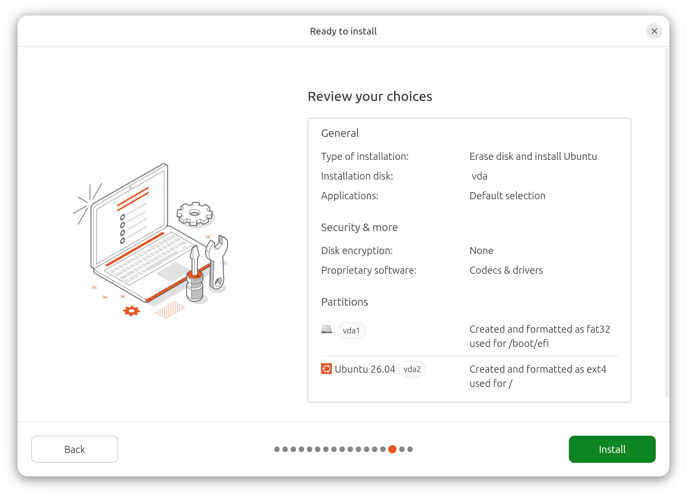
備註
If you choose to import an autoinstall configuration at the start of the installation process, the installer takes you directly to this screen to confirm that your configuration is correct.
Once you proceed, Ubuntu begins the installation process.
Complete the installation¶
Sit back and enjoy the slideshow as Ubuntu installs in the background.
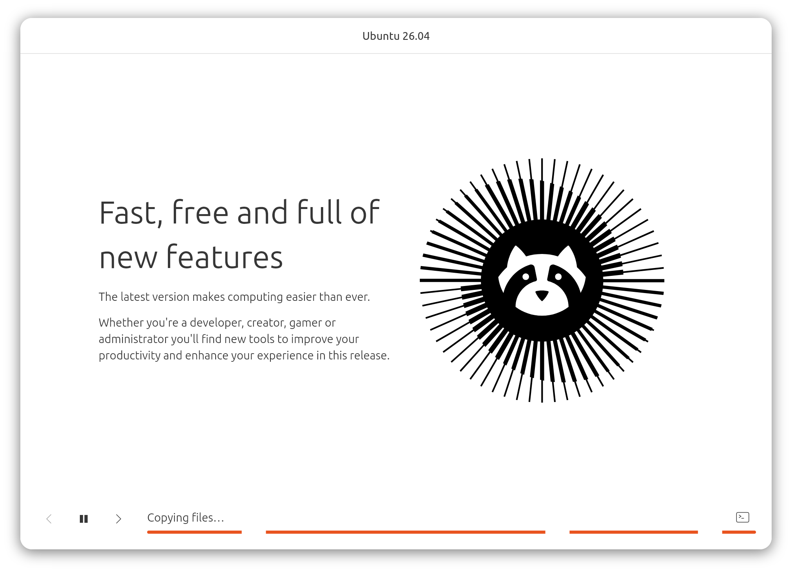
Alternatively, you can watch a detailed output of the installation process by clicking the icon in the lower right corner of the window.
When the installation has completed, the installer prompts you to restart your machine. Click Restart Now.
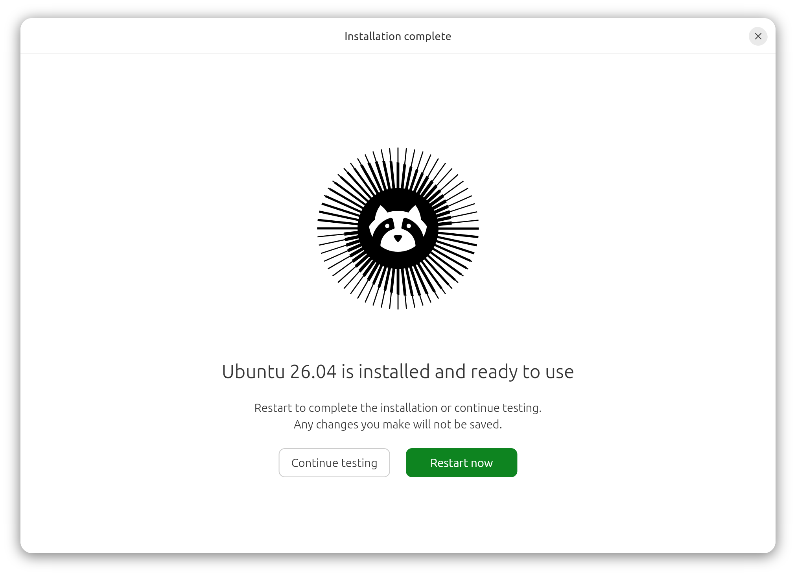
When you restart, Ubuntu asks you to remove your USB flash drive from the device. Then, press Enter.

Your new system is starting¶
Enter your disk encryption passphrase if you created one.
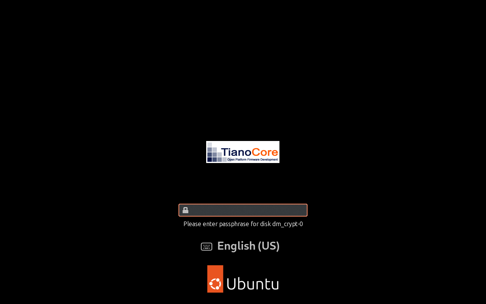
At the login screen, enter your user name and password.
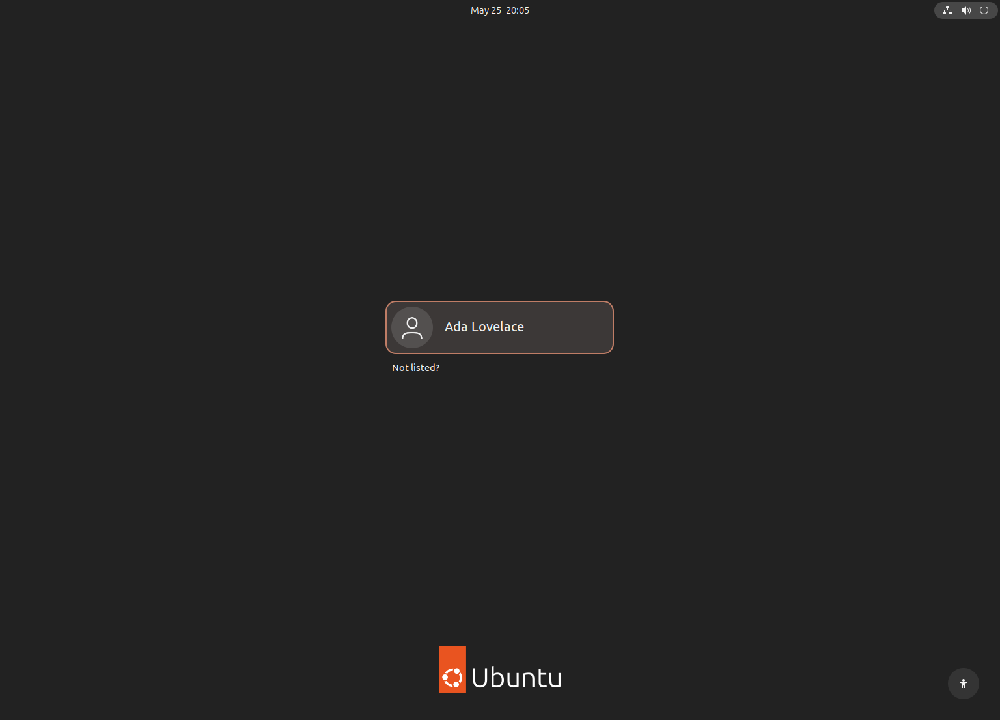
And that’s it. Welcome to your new Ubuntu Desktop!
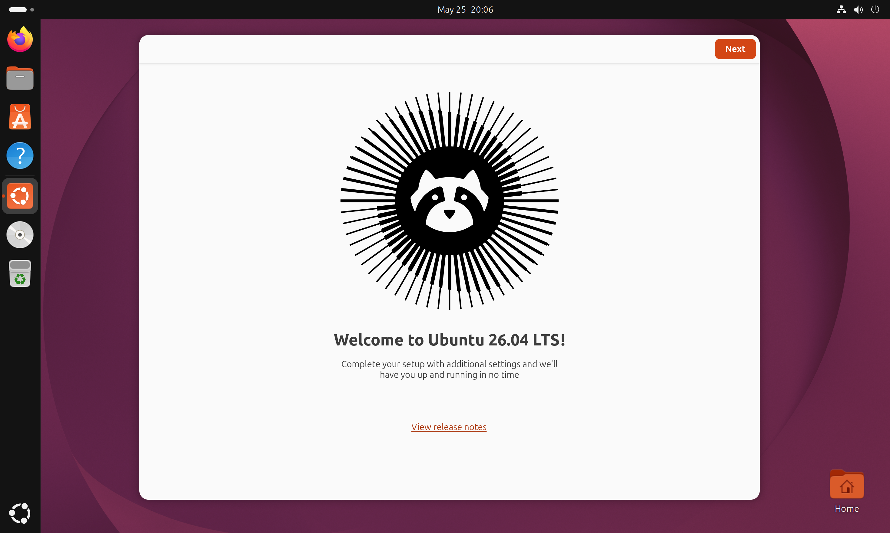
The Initial Setup app will help you with some additional setup options:
Enabling location services.
Opting into sending device information to Canonical to help improve Ubuntu.
By default, Canonical doesn’t collect device information.
Customizing the color scheme.
Downloading additional apps from App Center.
Don’t forget to update¶
It’s always good practice to ensure your system is up to date, especially after a fresh install.
The easiest way to do this is via the Software Updater app. Search for Software Updater via the app menu (the Ubuntu icon in the bottom corner of your screen). It will check for updates and apply them.
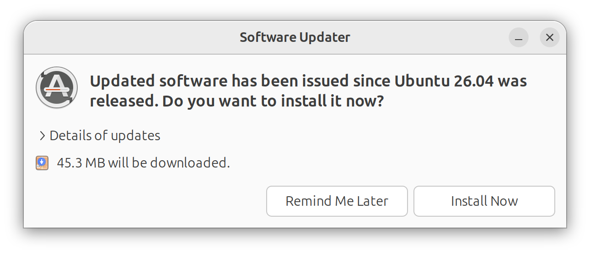
You can also update Ubuntu using the terminal:
Press Ctrl+Alt+T to bring up a Terminal window.
Type in:
$You will be prompted to enter your login password.
This will check for updates and tell you if there are any that need applying.
To apply any updates, type:
$Type Y, then press Enter to confirm to finish the update process.
For details, see Updating the system with APT in the Ubuntu Server documentation.
You’ve installed Ubuntu¶
We hope you enjoy your new desktop.
If you backed up your data, you can now move them back into Ubuntu. If you backed up your web browser account, log in to synchronize your data.
Keep your system safe. Consider enabling Ubuntu Pro in the Security Center to receive extended security updates. Ubuntu Pro is free for personal use on up to 5 machines.
If you have any issues, please contact us via the Ubuntu Discourse.
You can also read the latest news about Ubuntu Desktop on the Ubuntu Blog.
If you need to run both Ubuntu and Windows, you can install Ubuntu on Windows Subsystem for Linux (WSL).